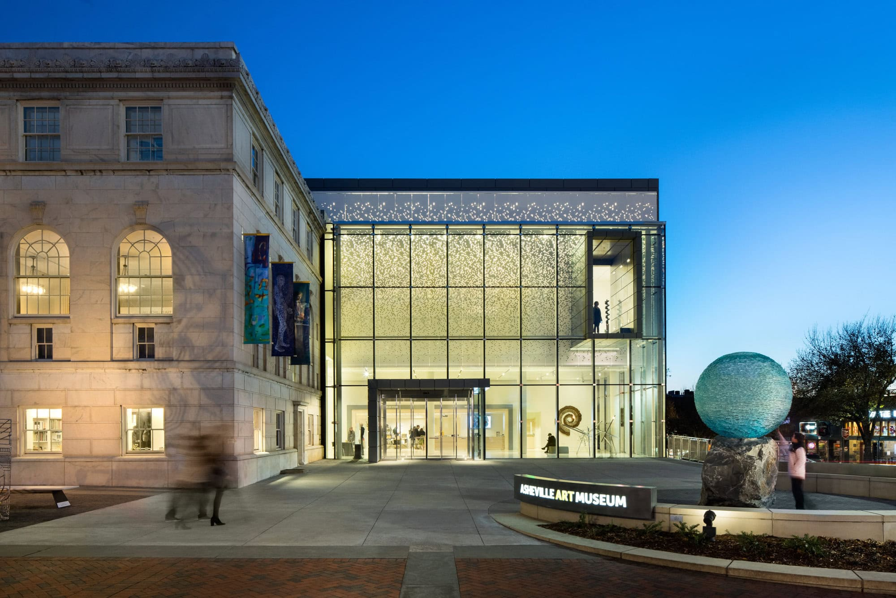
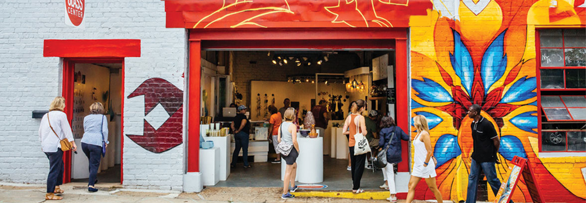

Art & Culture
Asheville Art Museum

Copyright: Sterling E. Stevens, www.ashevilleart.org.
Since 1948, the Asheville Art Museum has featured 20th and 21st-century American art in the heart of downtown Asheville. The Museum also features works that celebrate the artistic traditon of Southern Appalachia.
River Arts District

Source: https://www.riverartsdistrict.com/
The River Arts District has been voted Best Art District in the U.S. as part of USA Today's Reacher Choice Awards 2026. The RAD features the studios and works of over 300 local artists.